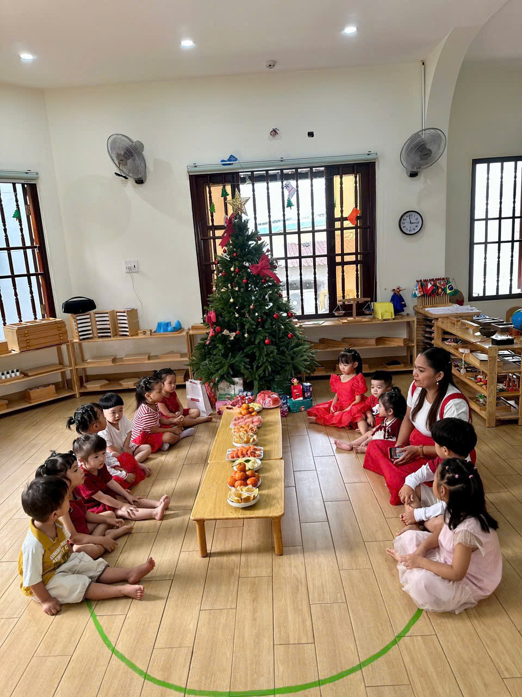
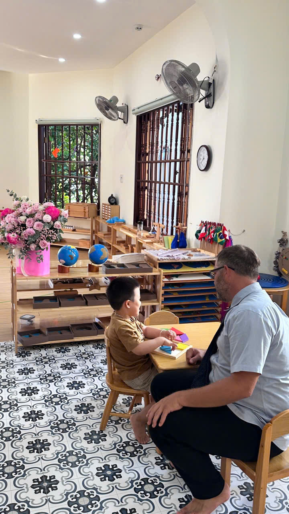
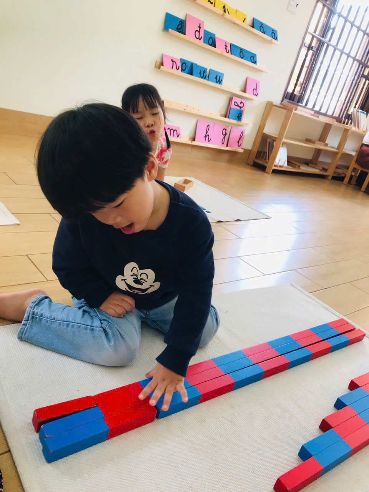
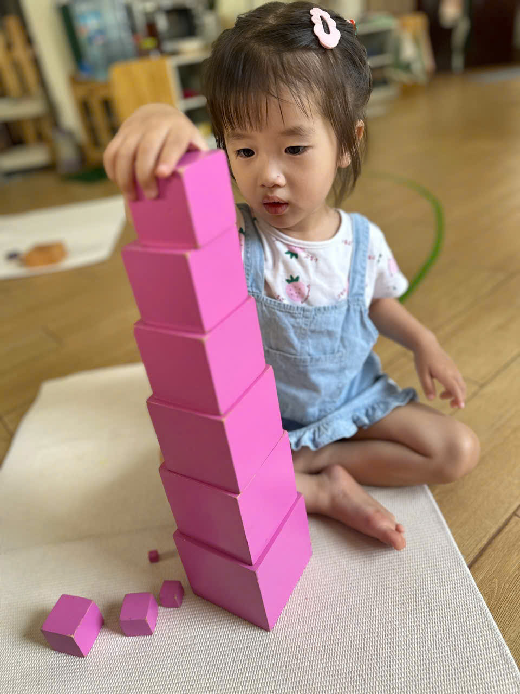
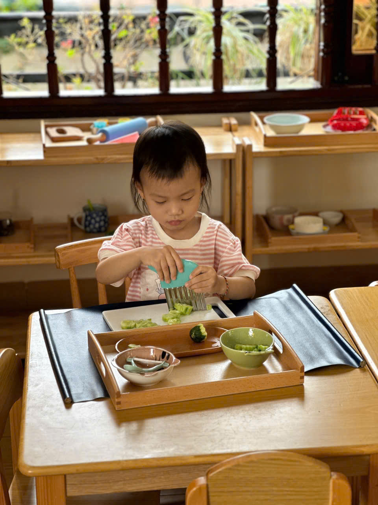
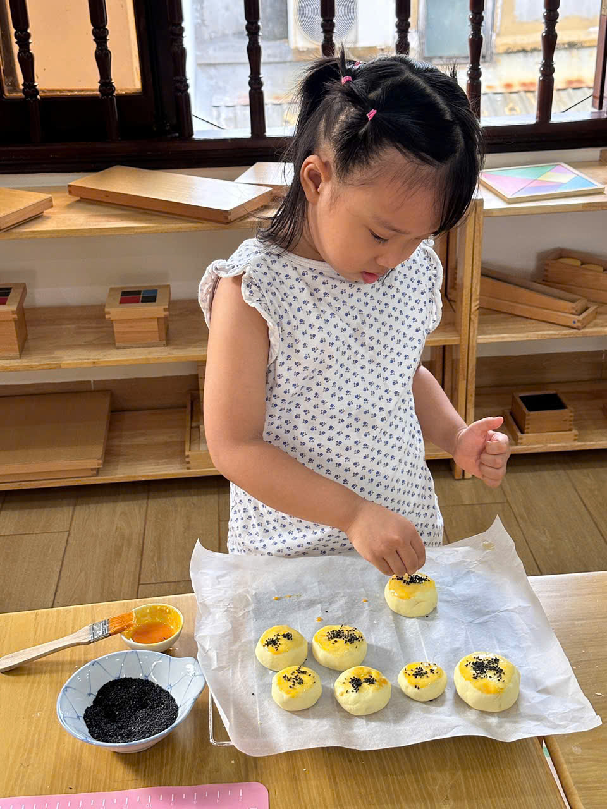
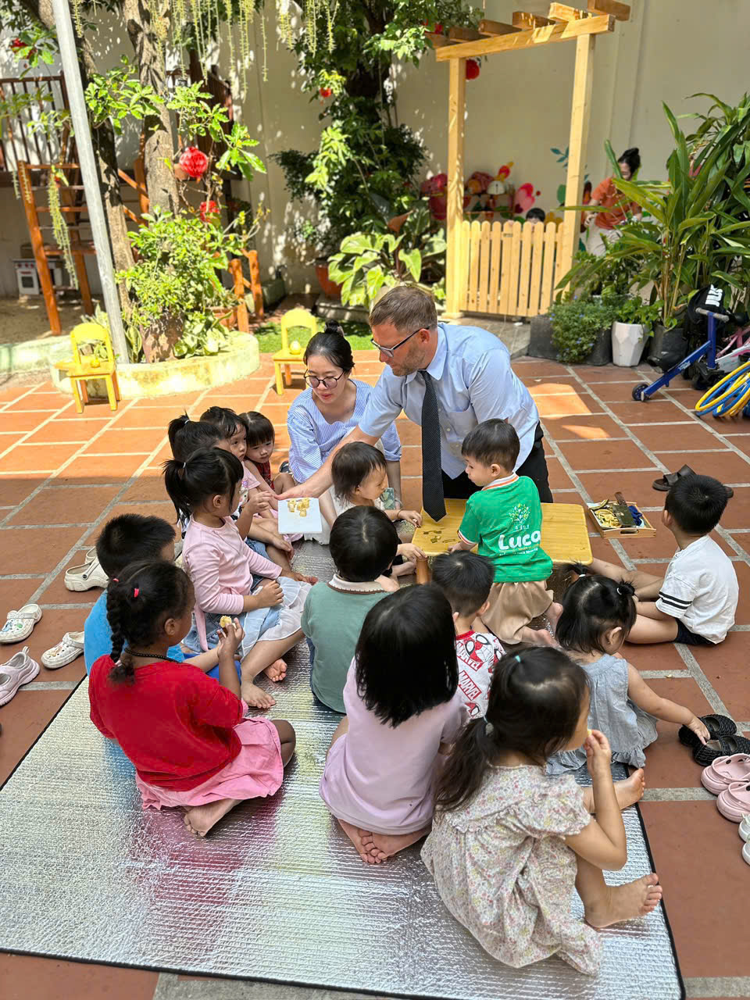
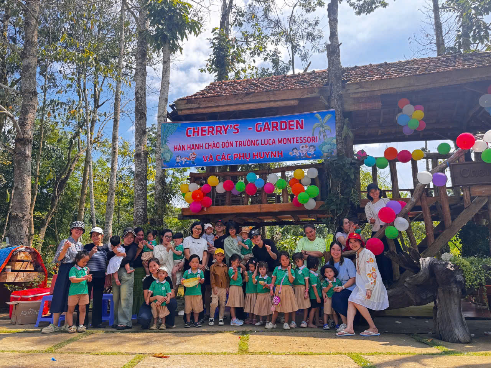
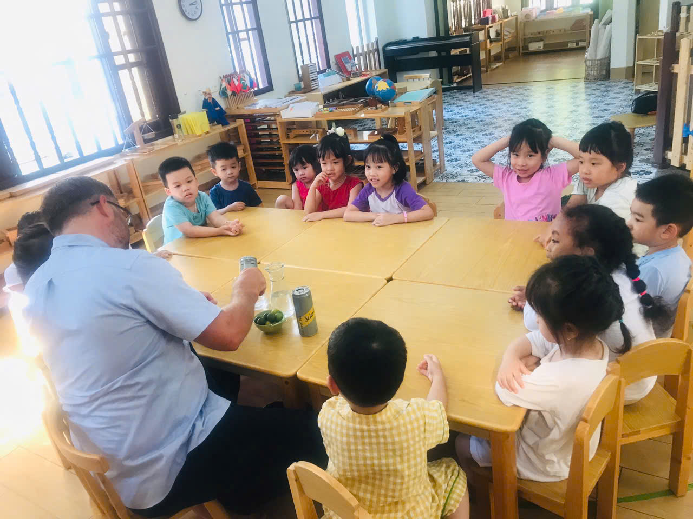
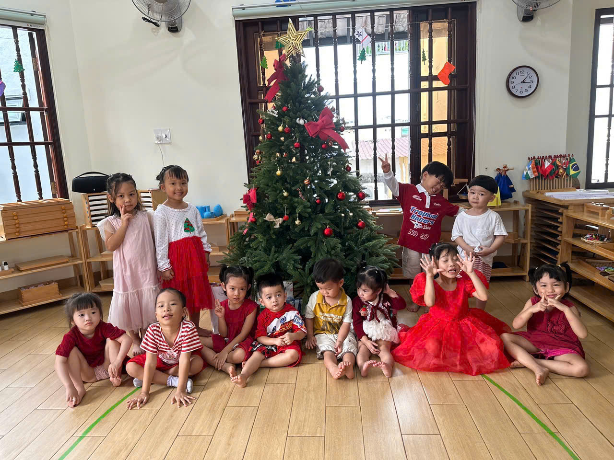

입학 가능 연령
9개월 - 6세발달 단계별로 반을 운영합니다
Prepared environment by age and stage
Luca Montessori는 아이의 연령과 발달 단계에 맞춰 교실과 일과를 세심하게 준비합니다. 아이는 자신의 속도에 맞는 환경 안에서 생활하며, 일상의 질서와 자립을 자연스럽게 익혀갑니다.
Luca Montessori의 특징
3개 환경Nido, Toddler, Luca Preschool은 각기 다른 발달 단계에 맞춰 교실 환경과 하루의 흐름을 따로 구성합니다.
입학 가능 연령
9개월 - 6세발달 단계별로 반을 운영합니다
학급 운영 방식
연령별 맞춤교사와 정원을 반별로 다르게 구성합니다
연령별 환경
질서와 평안함
매일의 자립
적절한 이중언어
정원이 제한된 학급
Luca Montessori 소개
Luca Montessori는 모든 아이를 같은 방식으로 돌보지 않습니다. 연령과 발달 단계에 따라 교실을 나누고, 아이가 무리하지 않고 자신의 리듬으로 생활할 수 있도록 돕습니다.
환경이 아이에게 잘 맞을수록 아이는 더 안정감을 느끼고, 활동에 집중하며, 스스로 해보는 경험을 조금씩 쌓아갑니다.
01
각 반은 아이의 발달 단계에 맞게 구성되어 있어, 아이가 무리 없이 움직이고 선택할 수 있습니다.
02
공간과 일과가 안정적으로 반복될수록 아이는 더 안심하고, 활동에 오래 집중할 수 있습니다.
03
스스로 해보는 경험이 쌓일수록 아이는 일상 속에서 자신감을 얻고 자립심을 키워갑니다.
학급 안내
Nido (9-18 tháng)
영아가 안정감을 느끼며 하루를 시작할 수 있도록, 돌봄과 초기 자립 경험을 세심하게 돕는 환경입니다.
Toddler (18-36 tháng)
질서와 반복이 중요한 시기에, 일상생활 연습과 언어 경험을 통해 자립의 기초를 쌓아가는 반입니다.
Lớp Mẫu giáo Luca (2,5-6 tuổi)
유아가 스스로 생각하고 탐구하는 힘을 넓혀가도록, 이중언어 환경과 몬테소리 활동을 균형 있게 경험하는 반입니다.
Luca의 강점
학급을 연령에 따라 나누고, 정원을 조절하며, 각 반에 맞는 교사 구성을 두는 이유는 아이가 하루를 무리 없이 보내고, 자신의 속도에 맞게 배우도록 돕기 위해서입니다.
“
아이가 편안함을 느끼는 환경에서는 하루의 리듬이 안정되고, 그 안에서 배우고 스스로 해보려는 힘도 자연스럽게 자라납니다.
빠르게 보는 Luca
아이의 발달 단계에 맞춰 Nido, Toddler, Preschool을 분리해 운영합니다.
각 반의 인원을 조절해 아이가 안정적으로 적응하고 교사와 충분히 상호작용할 수 있도록 돕습니다.
Toddler와 Preschool은 발달 단계에 맞는 방식으로 Việt - Anh 언어 환경을 경험합니다.
연령과 학급 특성에 따라 교사 수와 역할을 다르게 구성해 아이를 더 세심하게 살핍니다.
아이 스스로 선택하고 움직이며 집중할 수 있도록 교실 환경을 정돈해 둡니다.
월간 테마
이번 달 주제는 길, 이동수단, 교통 약속입니다. 아이들은 익숙한 생활 장면 속에서 보고, 움직이고, 만들며 자연스럽게 주제를 경험합니다.
Transportation & Traffic Rules
자동차, 기차, 배, 비행기처럼 아이가 좋아하는 이동수단에서 출발합니다. 신호등과 표지판도 함께 보며, 왜 약속이 필요한지 생활과 연결해 익혀갑니다.
4주 흐름
자동차와 기차처럼 익숙한 이동수단을 보며 도로 위의 기본 약속을 함께 익힙니다.
배와 물길로 주제를 넓히며, 환경이 달라져도 필요한 질서와 안전을 자연스럽게 연결합니다.
비행기와 하늘길을 통해 상상력을 넓히고, 만들기와 움직임 활동을 함께 경험합니다.
신호등과 표지판을 보며, 함께 지키는 약속이 왜 필요한지 생활 속 장면으로 이해해 봅니다.
Luca의 공간
실제 수업과 일상 장면을 중심으로 구성해, 교실의 분위기와 활동의 흐름을 학부모님이 보다 직관적으로 살펴보실 수 있도록 정리했습니다.

교실 환경아이들이 익숙한 자리와 리듬 안에서 하루를 시작하는 교실 분위기를 보여줍니다.

개별 활동교사는 가까이에서 관찰하고 돕되, 아이가 스스로 해보는 시간을 충분히 지켜봅니다.

몬테소리 교구추상적인 개념을 서두르지 않고, 눈과 손을 함께 쓰며 차분히 익혀가는 장면입니다.

Sensorial크기와 순서를 구분하고 반복해보는 과정 속에서 집중력과 질서감이 함께 자랍니다.

Practical Life준비하고 담고 정리하는 과정을 통해 손의 협응과 생활 속 자립을 자연스럽게 익힙니다.

일상 루틴먹기 전의 작은 준비 과정도 아이에게는 집중과 성취를 배우는 소중한 일상입니다.

소그룹 활동소그룹 안에서 교사와 또래를 함께 경험하며 듣기, 기다리기, 표현하기를 배워갑니다.

Outing교실 밖에서도 아이들은 익숙한 관계 안에서 새로운 공간과 경험을 차분히 만나게 됩니다.

정돈된 환경가구와 교구가 분명하게 정리된 공간은 아이가 더 편안하게 집중할 수 있도록 도와줍니다.

교실 분위기아이들이 익숙한 공간 안에서 자연스럽게 머물고 관계를 쌓아가는 분위기를 보여줍니다.
Luca에서의 하루
아이는 익숙하고 안정된 교실 안에서 하루를 천천히 시작합니다.
자신에게 맞는 활동을 선택하고, 교사의 적절한 도움 속에서 집중을 이어갑니다.
일상생활 연습과 언어, 감각, 소그룹 활동 속에서 아이는 매일 자립의 경험을 쌓아갑니다.
상담 및 방문 문의
“어떤 반이 맞을까요?”, “언제 시작하는 게 좋을까요?”, “하루는 어떻게 흘러가나요?” 같은 질문을 많이 주십니다. 방문 상담과 등록 문의까지 부담 없이 이어가실 수 있도록, 필요한 내용을 순서대로 안내해드립니다. 원하시면 위치와 이동 동선 안내도 함께 도와드립니다.